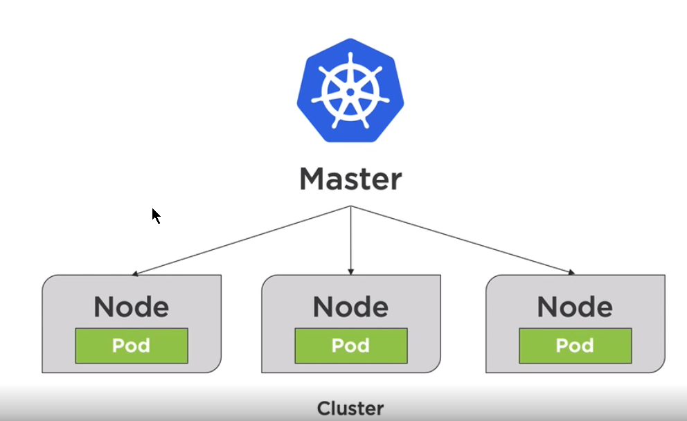
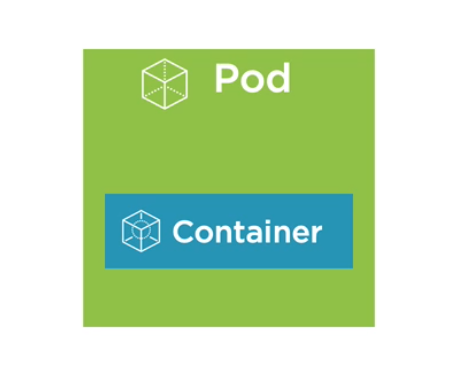
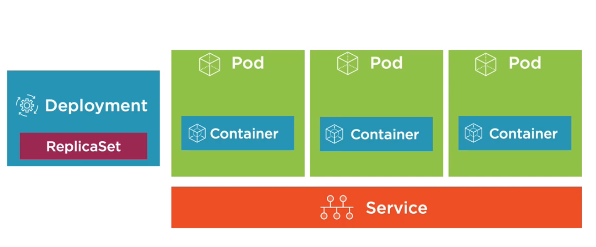
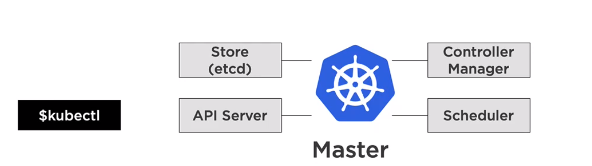
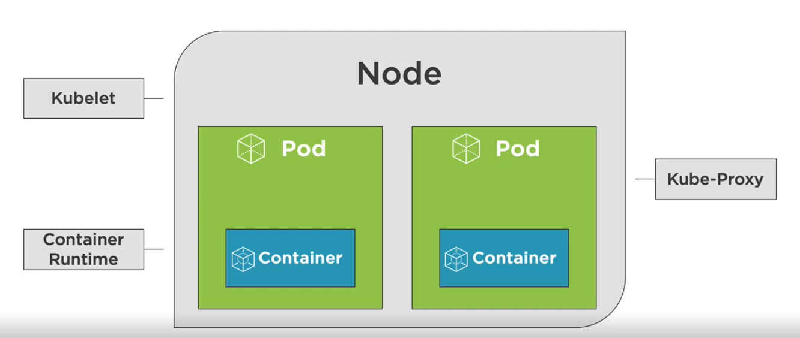

終於有機會接觸 Kubernetes (K8s) ，但對於整體的掌握度並沒有很好，所以從頭學起
Kubernetes Big Picutre
Kubernetes 是一個控制中心，來控制 node，多個 nodes 成一個 clusters，簡單來說就是管理一堆 VM，而每一個 node 內可以跑很多 pod，每一個 pod 內可以跑 container(s)


K8s 就是用來管理這些 Pod 的一種方式，搭配各種需求就會有各式的元素出現

而大腦當然需要其他的服務來協助管理眾多的 node，而我們會透過 API Server 對 K8s 進行相關的操作

node 當然也會有相關的服務人員跟上頭溝通

- Kubelet: Agent 與 master 做溝通
- Container Runtime: 用來跑 Pod 的
- Kube-Proxy: 負責網路的部分
kubectl 命令
- kubectl version: 檢查 Kubernetes 版本
- kubectl cluster-info: 顯示 Cluster 資訊
- kubectl get all: 取得目前在跑得 pods, deployments, services, etc.
- kubectl run [container-name] --image=[image-name]: 建立 deployement for pod
- kubectl port-forward [pod] [ports]: Forward a port to allow external access
- kubectl expose … : export port for a deployment/pod
- kubectl create [resource]: 建立 resouce
- kubectl apply [resource]: 套用 resouce
- kubectl --help : 顯示出可用的命令列表
Pods
- K8s 內的最小單位
- Container 的執行環境
- organize application 「parts」 into Pods
- 擁有自己的 IP、記憶體等資源，Pod 內的 Container 會共用這些資源
- live or die
- can replicate
container
- share the same Network namespace
- have the loopback network interface (localhost)
- processes need to bind to different ports (in the same pod)
建立 Pod
kubectl run [podname] --image=[image-name]
範例: kubectl run webserver --image=nginx:alpine
-
kubectl get pods : List pods
-
kubectl port-forward [name-of-pod] [external port]:[internal port]
kubectl port-forward webserver 8080:80 -
kubectl delete pod [name of pod] : 刪除 pod，但如果沒有刪除 deployment，pod 還會在長回來
-
kubectl delete deployment [name of deployment]: 刪除 deployment
Tips:
- 如果要拉的 image 不在 dockerhub (預設會去那邊找) 而只有在本地時，需要掛上
–-image-pull-policy=Never，這樣才不會出現ErrImagePull 的錯誤訊息
使用 YAML
Kubenetes 可以使用 YAML 的設定檔來作部屬
1 | apiVersion: v1 |
儲存成 xxx.yml 檔後，可透過以下的指令來建立、修改或刪除相關的服務
-
kubectl create -f xxx.yml -
kubectl apply -f xxx.yml -
kubectl delete -f xxx.yml
更多相關的指令可到網路上查詢